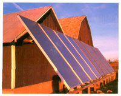

Ten 4-by-10-foot flat-plate collectors heat a straw bale greenhouse at Inn Serendipity in Browntown, Wisconsin. The panels provide 240,000 BTUs of heat each day, heating 700 gallons of water contained in storage tanks. Coupled with R-43 straw bale walls, the solar hot water heating system keeps the greenhouse toasty warm, even in the depths of a Midwestern winter.